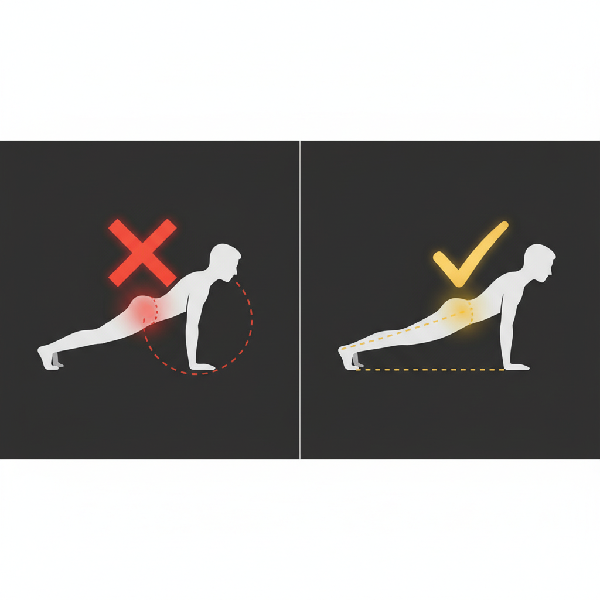
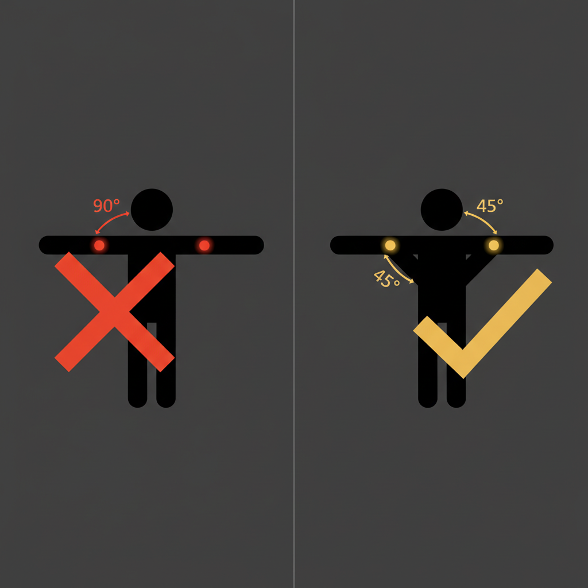

많은 사람들이 푸시업을 오랫동안 해왔지만 잘못된 자세로 하고 있습니다. 틀린 자세는 운동 효과를 떨어뜨릴 뿐 아니라 부상의 직접적인 원인이 됩니다. 아래 7가지 흔한 실수를 점검해보세요.
실수 1: 엉덩이가 처지는 자세
문제: 코어 근력이 부족하거나 피로할 때 엉덩이가 아래로 처지면서 허리에 과도한 부담이 가해집니다. 이는 요통의 흔한 원인입니다.
교정법: 코어에 의식적으로 힘을 주고, 배꼽을 척추 쪽으로 당기는 느낌을 유지하세요. 플랭크를 별도로 연습하면 코어 근력이 빨리 향상됩니다.

실수 2: 엉덩이가 너무 높이 올라감
문제: 엉덩이를 높이 들어 삼각형 자세가 되면 가슴 운동이 아닌 어깨 운동이 됩니다. 푸시업의 본래 효과를 얻기 어렵습니다.
교정법: 거울 옆에서 옆모습을 확인하거나, 누군가에게 자세를 봐달라고 하세요. 머리부터 발끝까지 곧은 선을 만드는 데 집중합니다.
실수 3: 팔꿈치를 90도로 벌림 (T자 자세)
문제: 팔꿈치가 몸통과 90도를 이루는 T자 형태는 어깨 관절(회전근개)에 심한 스트레스를 줍니다. 장기적으로 어깨 부상의 가장 큰 원인입니다.
교정법: 팔꿈치가 몸통과 약 45도 각도(화살표 ↗ 모양)를 이루도록 합니다. 위에서 보면 몸이 T가 아닌 화살표 형태여야 합니다.

실수 4: 불완전한 가동 범위
문제: 충분히 내려가지 않는 "반 푸시업"은 근육 자극이 부족합니다. 특히 가슴이 바닥 가까이까지 내려오지 않으면 가슴 근육의 완전한 수축-이완이 일어나지 않습니다.
교정법: 가슴이 바닥에서 주먹 하나 높이까지 내려가는 것을 기준으로 삼으세요. 그만큼 내려갈 수 없다면 더 쉬운 변형(인클라인 등)으로 돌아가세요.
실수 5: 머리를 숙이거나 들어올림
문제: 바닥을 보려고 고개를 숙이거나, 정면을 보려고 고개를 드는 것 모두 목에 불필요한 긴장을 유발합니다.
교정법: 눈은 자연스럽게 바닥에서 손가락 앞쪽 30cm 정도를 바라봅니다. 목은 척추의 자연스러운 연장선을 유지합니다.
실수 6: 숨 참기
문제: 힘든 동작에서 무의식적으로 숨을 참으면 혈압이 급격히 상승하고, 지구력이 떨어지며, 어지러움을 유발합니다.
교정법: 내려갈 때 숨을 들이마시고(코로), 올라올 때 숨을 내쉽니다(입으로). 리듬을 잡기 어려우면 소리를 내며 호흡합니다.
실수 7: 속도에 집착
문제: 횟수를 채우기 위해 빠르게 반복하면 근육이 충분한 자극을 받지 못하고, 관절에 충격이 가해집니다.
교정법: 2초에 걸쳐 내려가고, 1초 멈춘 후, 2초에 걸쳐 올라오는 "2-1-2 템포"를 연습하세요. 느린 동작이 빠른 동작보다 근육에 더 강한 자극을 줍니다.